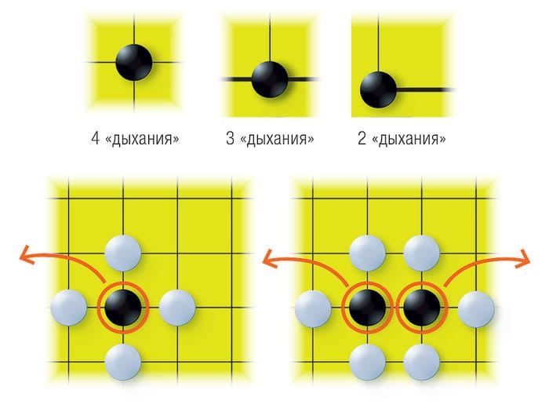
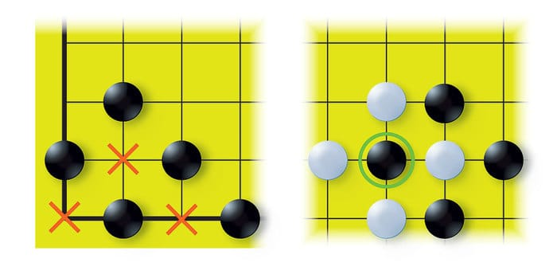
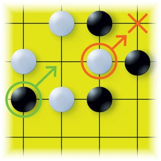
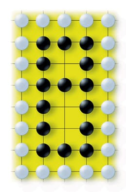
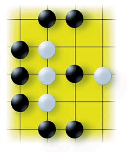
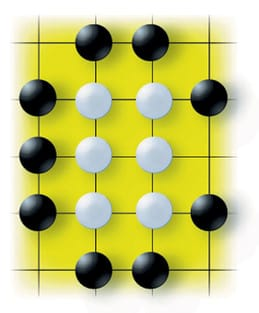
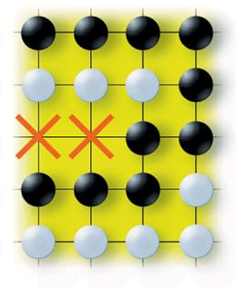

В Го играют на доске 19×19 линий. Начинающие тренируются на досках 9×9 и даже 5×5. Противники по очереди выставляют камни на перекрестья линий или пасуют. Цель игры — отгородить себе как можно больше свободных перекрестков. У каждого игрока достаточно камней, чтобы заполнить всю доску.
Правило коми.
Играющий черными ходит первым — на Востоке черный цвет символизирует агрессию. Для компенсации преимущества черных белые получают 6,5 очка. Из-за дробности форы в го не бывает ничьих.
«Дыхания» и «жизнь».

Камень на доске граничит максимум с четырьмя свободными перекрестками (на краю доски — с тремя, в углу — с двумя). Пока у камня или группы камней есть хотя бы одно «дыхание» (контакт со свободным перекрестком, по-японски — дамэ), они «живут». Если все дамэ перекрываются противником, камни «умирают» и снимаются с доски.
Суицидальные ходы.

Ставить камень в точку, где нет выхода на свободный пункт, запрещено, если только этим ходом не производится взятие камня или группы соперника.
Ситуация ко.

В игре случаются расстановки, при которых игроки могли бы бесконечно захватывать камни друг друга, делая ход на одно и то же перекрестье. В такой ситуации правила запрещают повторные взятия. Игрок, уступивший камень, обязан сходить на другой пункт доски или спасовать.
Подсчет очков.
Если игрок не видит ходов, которые могли бы принести ему дополнительные очки, он пасует. Если оба игрока пасуют подряд, игра считается оконченной. С доски снимаются «пленные» камни — те, что были бы захвачены при последовательном доигрывании партии. Игрок получает по одному очку за каждый свободный перекресток, окруженный своими камнями, и за каждый захваченный камень противника. Побеждает тот, кто набрал больше очков.
Варианты. Тактика Го.
Го — это игра в основание царства. Ее участники строят форты, проводят границы и захватывают столько «земли», сколько могут удержать. Если шахматная партия заканчивается уничтожением армии противника, то партия в го — перемирием и обменом пленными. Шахматы воспитывают бойца, полководца, а го — правителя, организатора.

1. Крепости.
Камень, выставленный на доску, не двигается и может избежать окружения только в составе группы. Но и объединенные камни возможно захватить, окружив их все разом. Крепости защищают с помощью пустот — «глаз».
Если у группы больше одного «глаза», она бессмертна независимо от размера пустот. Это не правило, а всего лишь следствие запрета на суицидальные ходы. Бессмертная группа называется крепостью.
2. Сторожевые камни.
Крепость нельзя разрушить. Но если она достаточно велика, то противник может занять пространство внутри нее. Чтобы защитить свои земли, на них расставляют сторожевые камни.
3. Лестница.
Ситуация погони, в которой черные не могут сбежать, пока белые не прекратят преследование или пока не будет достигнут край доски.

4. Гэта.
Построение, при котором у камней еще есть «дыхания», но блокирующий камень противника не дает им бежать: при любой попытке вырваться они будут взяты. Словом «гэта» называется также японская сандалия, в просторечии — башмак.

5. Атари.
Позиция, в которой камень (или группа камней) имеет только одно дамэ и следующим ходом может быть снят с доски, называется атари, то есть «опасность».

6. Сэки.
Если ни один из противников не может сделать ход без угрозы потерять группу, говорят о ситуации сэки («преграда»). При подсчете очков все камни в этой части доски считаются живыми, а пункты — свободными.